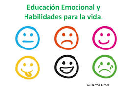

Sobre Nosotros
Emociones y habilidades para la vida es un juego diseñado por cuatro
personas de la Institucion Educativa Villa Flora del grado 11°1.Los creadores del juego son :
Valentina Ortiz es la documentadora
Mariana Meneses es la programadora
Sofia Saldarriaga es la diseñadora
